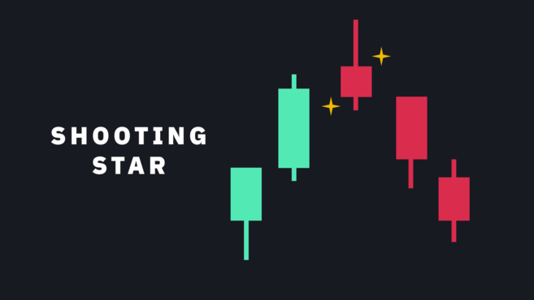
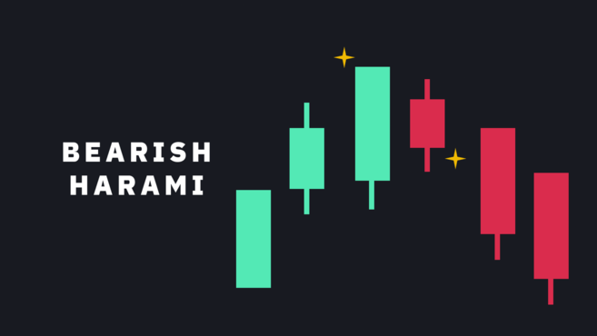
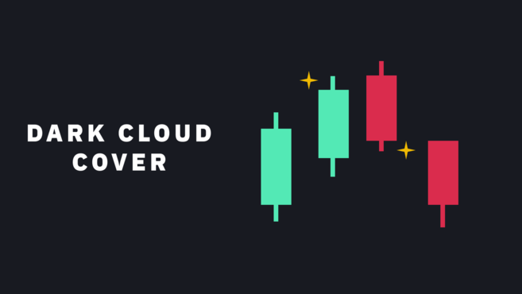
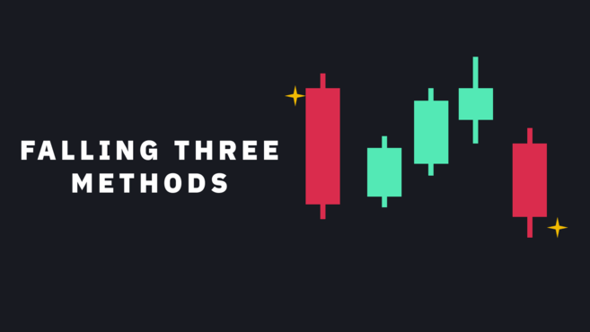
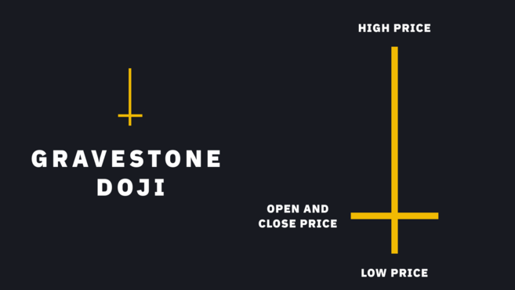

Candlesticks are a type of charting technique used to describe the price movements of an asset. First developed in 18th-century Japan, they’ve been used to find patterns that may indicate where asset prices have headed for centuries. Today, cryptocurrency traders use candlesticks to analyze historical price data and predict future price movements.
Individual candlesticks form candlestick patterns that can indicate whether prices are likely to rise, fall, or remain unchanged. This provides insight into market sentiment and potential trading opportunities.
Imagine you are tracking the price of an asset like a stock or a cryptocurrency over a period of time, such as a week, a day, or an hour. A candlestick chart is a way to represent this price data visually.
The candlestick has a body and two lines, often referred to as wicks or shadows. The body of the candlestick represents the range between the opening and closing prices within that period, while the wicks or shadows represent the highest and lowest prices reached during that period.
A green body indicates that the price has increased during this period. On the other hand, a red body indicates a bearish candlestick, suggesting that the price decreased during that period.
Candlestick patterns are formed by arranging multiple candles in a specific sequence. There are numerous candlestick patterns, each with its interpretation. While some candlestick patterns provide insight into the balance between buyers and sellers, others may indicate a reversal, continuation, or indecision.
It's important to note that candlestick patterns aren’t intrinsically buy or sell signals. Instead, they are a way of looking at current market trends to potentially identify upcoming opportunities. As such, it’s always helpful to look at patterns in context.
This can be the context of the broader market environment or technical pattern on the chart, including the Wyckoff Method, the Elliott Wave Theory, and the Dow Theory. It can also include technical analysis (TA) indicators, such as Trend Lines, the Relative Strength Index (RSI), Stochastic RSI, Ichimoku Clouds, or the Parabolic SAR.
Candlestick patterns can also be used in conjunction with support and resistance levels. Support levels are price levels where demand is expected to be strong, while resistance levels are price levels where supply is expected to be strong.
A hammer is a candlestick with a long lower wick at the bottom of a downtrend, where the lower wick is at least twice the size of the body.A hammer shows that despite high selling pressure, bulls pushed the price back up near the open. A hammer can either be red or green, but green hammers may indicate a stronger bullish reaction.
This pattern is just like a hammer but with a long wick above the body instead of below. Similar to a hammer, the upper wick should be at least twice the size of the body.
An inverted hammer occurs at the bottom of a downtrend and may indicate a potential to the upside. The upper wick indicates that the price has stopped its continued downward movement, even though the sellers eventually managed to drive it down near the open. As such, the inverted hammer could indicate that buyers may soon take control of the market.

The three white soldiers pattern consists of three consecutive green candlesticks that all open within the body of the previous candle and close above the previous candle's high.
These candlesticks shouldn't have long lower wicks, which indicates that continuous buying pressure is driving the price higher. The size of the candlesticks and the length of the wicks can be interpreted as chances of a continuation or a possible retracement.

A bullish harami is a long red candlestick followed by a smaller green candlestick that's completely contained within the body of the previous candlestick.
The bullish harami can be formed over two or more days, and it's a pattern that indicates that the selling momentum is slowing down and may be coming to an end.

The hanging man is the bearish equivalent of a hammer. It typically forms at the end of an uptrend with a small body and a long lower wick.
The lower wick indicates that there was a big sell-off, but the bulls managed to regain control and drive the price higher. With this in mind, the sell-off after a long uptrend can act as a warning that the bulls may soon lose momentum in the market.

The shooting star consists of a candlestick with a long top wick, little or no bottom wick, and a small body, ideally near the bottom. The shooting star is similar in shape to the inverted hammer but is formed at the end of an uptrend.
It indicates that the market reached a high, but then the sellers took control and drove the price back down. Some traders prefer to wait for the next few candlesticks to unfold to confirm the pattern.

The three black crows consist of three consecutive red candlesticks that open within the body of the previous candle and close below the low of the last candle.
The bearish equivalent of three white soldiers. Ideally, these candlesticks shouldn't have long higher wicks, indicating that selling pressure continues to push the price lower. The size of the candlesticks and the length of the wicks can be used to judge the chances of continuation.

The bearish harami is a long green candlestick followed by a small red candlestick with a body that is completely contained within the body of the previous candlestick.
The bearish harami can unfold over two or more days, appears at the end of an uptrend, and can indicate that buying pressure is waning.

The dark cloud cover pattern consists of a red candlestick that opens above the close of the previous green candlestick but then closes below the midpoint of that candlestick.
High volume can often accompany this pattern, indicating that momentum may shift from bullish to bearish. Traders may wait for a third red bar to confirm the pattern.

The rising three methods candlestick pattern occurs in an uptrend where three consecutive red candlesticks with small bodies are followed by the continuation of the uptrend. Ideally, the red candles should not break the area of the previous candlestick.
The continuation is confirmed by a green candle with a large body, indicating that the bulls are back in control of the direction of the trend.

The inverse of the three rising methods, the three falling methods instead indicate the continuation of a downtrend.



A price gap occurs when a financial asset opens above or below its previous closing price, creating a gap between the two candlesticks.
While many candlestick patterns include price gaps, patterns based on this type of gap aren’t prevalent in the crypto market as trading takes place around the clock. Price gaps can still occur in illiquid markets, but aren’t useful as actionable patterns because they mainly indicate low liquidity and high bid-ask spreads.
Traders should keep the following tips in mind to use candlestick patterns effectively while trading cryptocurrencies:
Crypto traders should have a solid understanding of the basics of candlestick patterns before using them to make trading decisions. This includes understanding how to read candlestick charts and the various patterns that can form.
While candlestick patterns can provide valuable insights, they should be used with other technical indicators to form more well-rounded projections. Some examples of indicators that can be used in combination with candlestick patterns include moving averages, RSI, and MACD.
Crypto traders should analyze candlestick patterns across multiple timeframes to gain a broader understanding of market sentiment. For example, if a trader is analyzing a daily chart, they should also look at the hourly and 15-minute charts to see how the patterns play out in different timeframes.
Using candlestick patterns carries risks like any trading strategy. Traders should always practice risk management techniques, such as setting stop-loss orders, to protect their capital. It's also important to avoid overtrading and only enter trades with a favorable risk-reward ratio.
Every trader can benefit from being familiar with candlesticks and what their patterns indicate, even if they don't incorporate them into their trading strategy.
While they can be useful in analyzing the markets, it's important to remember that they aren’t infallible. They’re helpful indicators that convey the buying and selling forces that ultimately drive the markets.
Disclaimer and Risk Warning: This content is presented to you on an “as is” basis for general information and educational purposes only, without representation or warranty of any kind. It should not be construed as financial, legal or other professional advice, nor is it intended to recommend the purchase of any specific product or service. You should seek your own advice from appropriate professional advisors. Where the article is contributed by a third party contributor, please note that those views expressed belong to the third party contributor, and do not necessarily reflect those of Binance Academy. For further details. Digital asset prices can be volatile. The value of your investment may go down or up and you may not get back the amount invested. You are solely responsible for your investment decisions and Maxwell Trrading Solution is not liable for any losses you may incur. This material should not be construed as financial, legal or other professional advice.